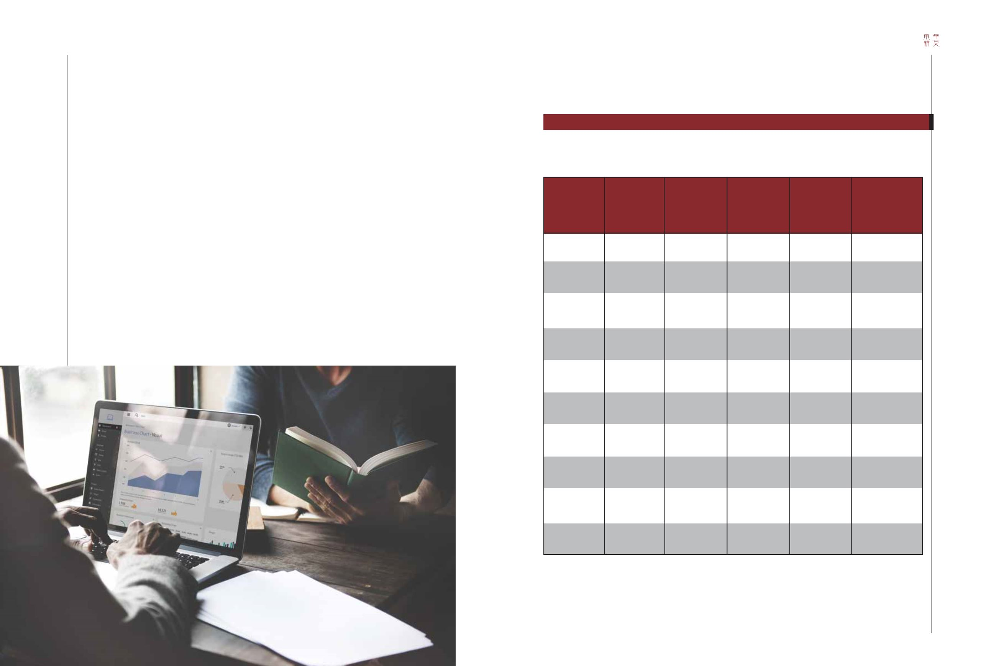

72-73 / 116
72-73 / 116


73
72
SOUTH CHINA ELITE
The aforementioned countercyclical strategies are
based on an assumption that business executives know
when the peak will be and can therefore take action in
advance. But how do you know the timing of these peaks?
It is unrealistic for business executives to predict the
exact date of a peak or a trough. However, statistics on
the duration of previous cycles may provide some clues.
The National Bureau of Economic Research (NBER), a
well-known economic research institute in the US, offers
just these statistics. NBER has a Business Cycle Dating
Committee to determine business cycles in the US. In
2010 the committee confirmed June 2009 as the trough
of the economic downturn following the crisis of 2008
by considering a number of economic indicators. NBER
has also identified all economic peaks and troughs in the
US since 1857. The following table shows those peaks
and troughs after 1950 (the post-war period).
Predicting turning points of an economic cycle
預測經濟週期轉折點
上述逆週期策略建基於這樣一個假設：企業管理人知道
高峰何時出現，因此可提前採取行動。然而，如何能知道高
峰的時機呢？要企業管理人準確預測高峰或低谷的確切日
期，無疑是癡人說夢。然而，過往經濟週期的長短，可能會
提供一些線索。享負盛名的美國全國經濟研究所，正為我們
提供了這些統計數據。美國全國經濟研究所設有商業週期定
期委員會，專責分析美國的商業週期。2010年時，委員會考
慮過一些列經濟指標後，確認2009年6月乃2008年金融危機
後的低谷。它亦列出美國自1857年起的所有經濟高峰和低
谷。以下列表列舉出1950年（戰後時期）的高峰和低谷。
TABLE
表
2
DURATION OF ECONOMIC PEAKS AND TROUGHS (SINCE 1950)
經濟高峰和低谷至持續時間 (自1950年起)
Peak month
高峰月份
JULY 1953
1953年7月
AUGUST 1957
1957年8月
APRIL 1960
1960年4月
DECEMBER 1969
1969年12月
NOVEMBER 1973
1973年11月
JANUARY 1980
1980年1月
JULY 1981
1981年7月
JULY 1990
1990年7月
MARCH 2001
2001年3月
DECEMBER 2007
2007年12月
Trough month
低谷月份
MAY 1954
1954年5月
APRIL 1958
1958年4月
FEBRUARY 1961
1961年2月
NOVEMBER 1970
1970年11月
MARCH 1975
1975年3月
JULY 1980
1980年7月
NOVEMBER 1982
1982年11月
MARCH 1991
1991年3月
NOVEMBER 2001
2001年11月
JUNE 2009
2009年6月
Duration,
peak to trough
持續時間
(從高峰至低谷)
10
8
10
11
16
6
16
8
8
18
Duration,
trough to peak
持續時間
(從低谷至高峰)
45
39
24
106
36
58
12
92
120
73
Duration,
peak to peak
持續時間
(從高峰至高峰)
56
49
32
116
47
74
18
108
128
81
Duration,
trough to trough
持續時間
(從低谷至低谷)
55
47
34
117
52
64
28
100
128
91
Data source: NBER
(http://conference.nber.org/cycles/March91.html)NB: the “Duration” measured by month tells the length of economic cycles.
資料來源：美國全國經濟研究所
(http://conference.nber.org/cycles/March91.html)
註：以月為單位的「持續時間」顯示經濟週期的長短